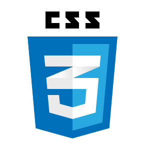
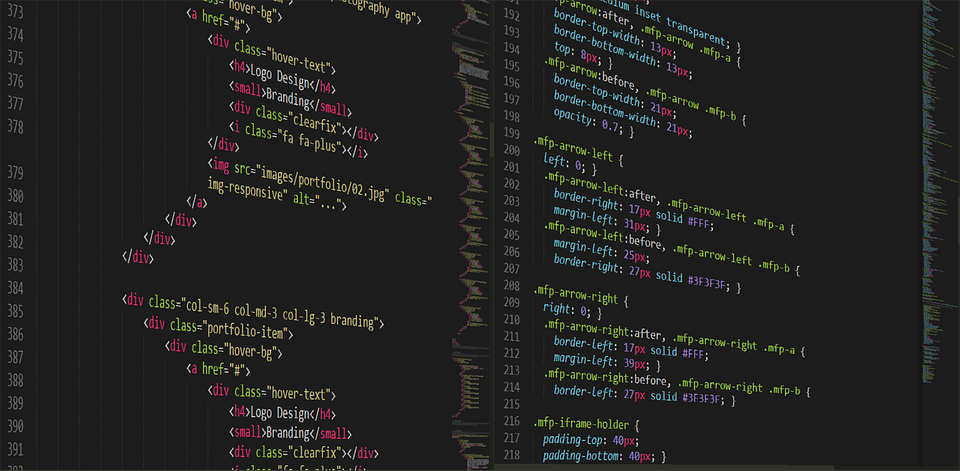

Hojas de estilo en cascada

Las hojas de estilo en cascada CSS consisten en definir, mediante una sintaxis
especial que nos permite crea paginas web mas flexibles y ligeras, de tal manera que podemos definir el
aspecto grafico de una formar sencilla y precisa, la forma de presentación que se aplica a:
- Un web entero, de modo que se puede definir la forma de todo el web de una sola
vez.
- Un documento HTML o página, se puede definir la forma, en un pequeño trozo de
código en la cabecera, a toda la página.
Pilamunga Poveda, E. M., & DT-López Sevilla, G. M. (2012).
El maquetado a base de scripts y hojas de estilo en cascada (CSS) y su incidencia en la optimización de un sitio web.
Durango, A. (2015). Diseño Web con CSS: 2ª Edición. IT Campus Academy.
Frameworks CSS

El término framework, hace referencia a una estructura de software compuesta por componentes
personalizables e intercambiables para el desarrollo de una aplicación, en la actualidad
existen gran variedad de frameworks HTML5, algunos con enfoque a diseñadores y otros a programadores,
lo que a la hora de diseñar y crear nuestras paginas web nos facilitan el manejo de estructuras.
Los frameworks mas conocidos son:
Aponte, Á. M. V. (2014). Guía comparativa de Frameworks para los lenguajes HTML 5, CSS y JavaScript para el desarrollo
de aplicaciones Web (Doctoral dissertation, Universidad Tecnológica de Pereira. Facultad de Ingenierías Eléctrica, Electrónica,
Física y Ciencias de la Computación. Ingeniería de Sistemas y Computación).